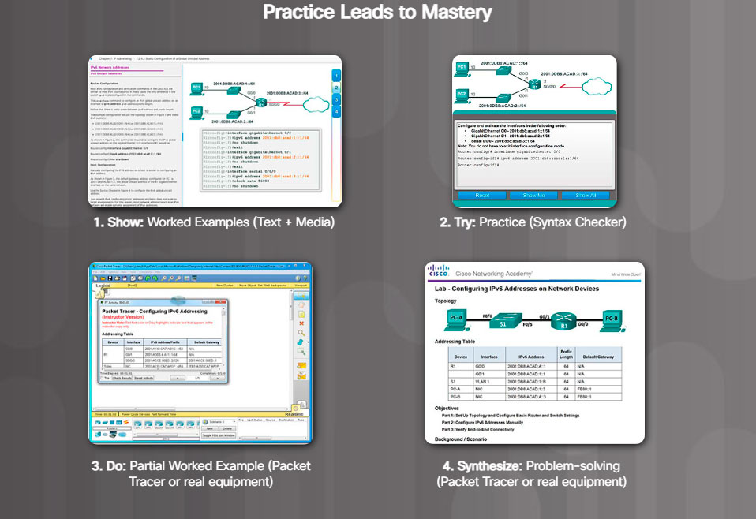

In a typical lesson, after learning about a topic for the first time, you will check your understanding with some interactive media items. If there are new commands to learn, you will practice them with the Syntax Checker before using the commands to configure or troubleshoot a network in Packet Tracer, the Networking Academy network simulation tool. Next, you will do practice activities on real equipment in your classroom or accessed remotely over the internet.
Packet Tracer can also provide additional practice any time by creating your own activities or you may want to competitively test your skills with classmates in multi-user games. Packet Tracer skills assessments and skills integration labs give you rich feedback on the skills you are able to demonstrate and are great practice for chapter, checkpoint, and final exams.
